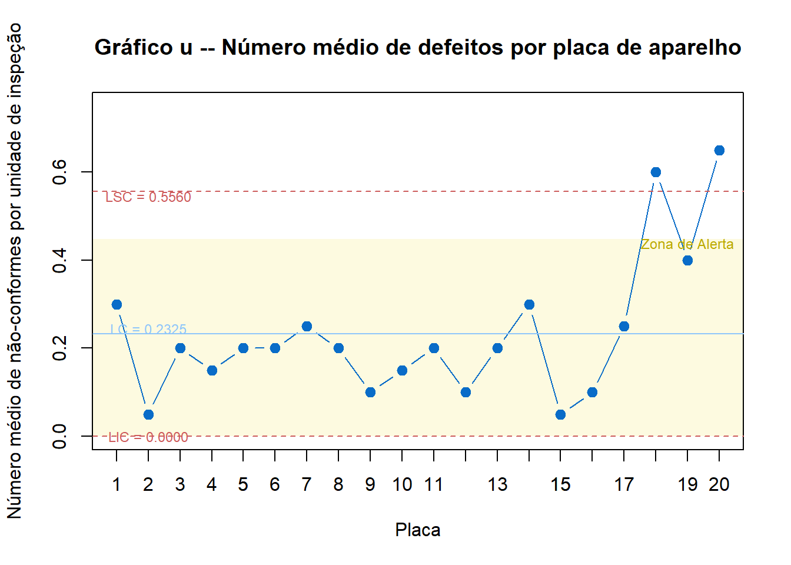
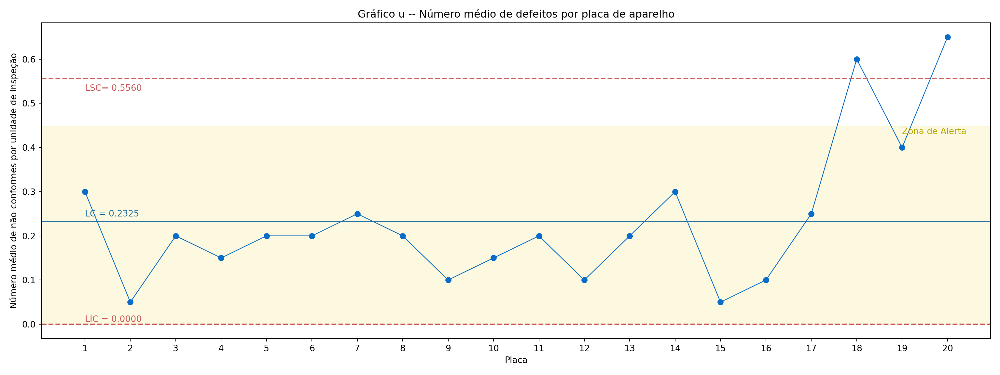
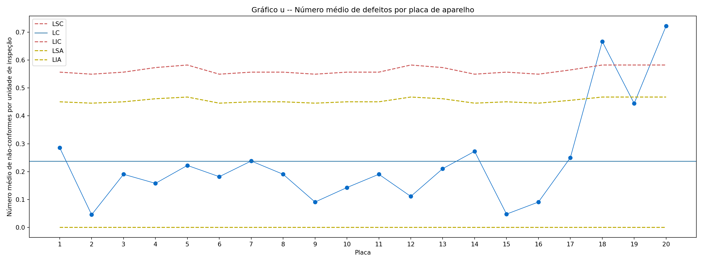

O gráfico \(p\) é uma ferramenta destinada ao monitoramento da proporção de unidades defeituosas em um processo produtivo. Esse gráfico é particularmente útil quando a característica de qualidade em estudo pode ser classificada de forma binária, isto é, como “defeituoso” ou “não defeituoso”.
Para cada amostra coletada é calculada a fração amostral não conforme, definida como a razão entre o número de unidades não conformes (ou seja, unidades defeituosas) na amostra \(D_i\) e o tamanho \(n\) da amostra, isto é, \[\hat{p_i} = \frac{D_i}{n}\] Sendo assim, a linha central para o gráfico \(p\) é dada por \(\hat{p}\) e os limites para o gráfico (±3\(\sigma\)) são dados por: \[LIC = \hat{p} - 3\sqrt\frac{\hat{p}(1 - \hat{p})}{n}\]\[LSC = \hat{p} + 3\sqrt\frac{\hat{p}(1 - \hat{p})}{n}\]
4.2.1 Exemplo
Selecionadas 19 amostras de tamanho \(n\) = 50, temos que:
É possível notar no gráfico que as amostras 6 e 10 ultrapassam o limite superior de controle, portanto, estão, estatísticamente, fora de controle.
4.3 Gráficos de Controle para \(np\)
Em determinados processos, os itens produzidos podem apresentar certo número de pequenas não conformidades que não o caracterizem como um item não conforme. No entanto, pequenas não conformidades em excesso pode ser perceptível (e indesejável) ao consumidor.
O gráfico \(np\) tem por objetivo o monitoramento do número de itens defeituosos em uma linha de produção, detectando possíveis problemas no processo quando há extrapolação dos limites de controle.
4.3.1 Gráfico \(np\) com Subgrupos Fixos
Quando o número de amostras coletadas é fixa ao longo do tempo, seus limites de controle e de advertência também o serão. Desta forma, os limites de controle do gráfico \(p\) com nível de operação \(3\sigma\) (\(L=3\)) são adaptados de tal forma que
A construção da carta de controle \(np\) considera o número de defeitos constados em cada amostra e, baseado nele, é calculado a proporção de defeitos. É possível a determinação de zonas de alerta, onde o processo ainda não sofreu efetivo descontrole, porém é dado um sinal de aviso. O processo deve ser monitorado com maior cautela em casos de tendência ou variações cíclicas e sucessivas.
Para contextualização o gráfico abaixo representa uma linha de produção com controle realizado feito a partir de \(n=50\) itens em cada amostra, com número de defeitos representado por \(D_i\).
([<matplotlib.axis.XTick object at 0x000002CCABDC76B0>, <matplotlib.axis.XTick object at 0x000002CCABE1AC30>, <matplotlib.axis.XTick object at 0x000002CCABE1B0E0>, <matplotlib.axis.XTick object at 0x000002CCABDDA990>, <matplotlib.axis.XTick object at 0x000002CCABDD88C0>, <matplotlib.axis.XTick object at 0x000002CCABE19D30>, <matplotlib.axis.XTick object at 0x000002CCABE1BE00>, <matplotlib.axis.XTick object at 0x000002CCABE2C5C0>, <matplotlib.axis.XTick object at 0x000002CCABE2D010>, <matplotlib.axis.XTick object at 0x000002CCABDD99D0>, <matplotlib.axis.XTick object at 0x000002CCABE2D970>, <matplotlib.axis.XTick object at 0x000002CCABE2E390>, <matplotlib.axis.XTick object at 0x000002CCABE2EE10>, <matplotlib.axis.XTick object at 0x000002CCABE2F650>, <matplotlib.axis.XTick object at 0x000002CCABE2DCD0>, <matplotlib.axis.XTick object at 0x000002CCABE2FD70>, <matplotlib.axis.XTick object at 0x000002CCABE60AA0>, <matplotlib.axis.XTick object at 0x000002CCABE61550>, <matplotlib.axis.XTick object at 0x000002CCABE61EE0>, <matplotlib.axis.XTick object at 0x000002CCABE60DA0>, <matplotlib.axis.XTick object at 0x000002CCABE62810>, <matplotlib.axis.XTick object at 0x000002CCABE63200>, <matplotlib.axis.XTick object at 0x000002CCABE63D10>, <matplotlib.axis.XTick object at 0x000002CCABE63F50>, <matplotlib.axis.XTick object at 0x000002CCABE2C9B0>], [Text(0, 0, '1'), Text(1, 0, '2'), Text(2, 0, '3'), Text(3, 0, '4'), Text(4, 0, '5'), Text(5, 0, '6'), Text(6, 0, '7'), Text(7, 0, '8'), Text(8, 0, '9'), Text(9, 0, '10'), Text(10, 0, '11'), Text(11, 0, '12'), Text(12, 0, '13'), Text(13, 0, '14'), Text(14, 0, '15'), Text(15, 0, '16'), Text(16, 0, '17'), Text(17, 0, '18'), Text(18, 0, '19'), Text(19, 0, '20'), Text(20, 0, '21'), Text(21, 0, '22'), Text(22, 0, '23'), Text(23, 0, '24'), Text(24, 0, '25')])
Código
plt.tight_layout()plt.show()
A partir do gráfico acima podemos concluir pela estabilidade do processo, com linha central em \(LC = 15,44\), limites de alerta (\(2\sigma\)) em \(\{LIA; LSA\} = \{5,6395; 25,2405\}\) e limites de controle em \(\{LIC; LSC\} = \{8,9064; 21,97364\}\). Nota-se que não há pontos fora da zona de alerta e todos os pontos das \(m=25\) amostras retiradas não apresentam sinais de tendência ou ciclidade.
4.3.2 Gráfico \(np\) com Subgrupos Variáveis
Na ocorrência de amostras de tamanho variável, sendo \(n_j = 1,2,\dots,m\), os limites de controle se adequam ao tamanho amostral individual. Desta forma, os limites para um processo em \(3\sigma\) são expressos por
representando as condições do limite inferior de controle, \[
LC = n_j\bar{p}
\] representa o limite central e \[
LSC = n_j\bar{p} + 3 \sqrt{n_j\bar{p}\cdot(1-\bar{p})}
\] representa o limite superior de controle.
A construção do gráfico considera o número variável do tamanho amostral (\(n\)), gerando, portanto, limites de controle e de alerta flutuantes. A carta abaixo considerou dimensões de amostra entre 48 e 52 unidades em cada retirada.
([<matplotlib.axis.XTick object at 0x000002CCAD582360>, <matplotlib.axis.XTick object at 0x000002CCABE79C10>, <matplotlib.axis.XTick object at 0x000002CCAD5F65A0>, <matplotlib.axis.XTick object at 0x000002CCAD5F6F00>, <matplotlib.axis.XTick object at 0x000002CCABDB4A40>, <matplotlib.axis.XTick object at 0x000002CCAD583500>, <matplotlib.axis.XTick object at 0x000002CCAD5F49B0>, <matplotlib.axis.XTick object at 0x000002CCAD5F7AA0>, <matplotlib.axis.XTick object at 0x000002CCAD62C4A0>, <matplotlib.axis.XTick object at 0x000002CCAD5F6360>, <matplotlib.axis.XTick object at 0x000002CCAD5A0D70>, <matplotlib.axis.XTick object at 0x000002CCAD62D310>, <matplotlib.axis.XTick object at 0x000002CCAD62DDF0>, <matplotlib.axis.XTick object at 0x000002CCAD62E840>, <matplotlib.axis.XTick object at 0x000002CCAD62E030>, <matplotlib.axis.XTick object at 0x000002CCAD62F1D0>, <matplotlib.axis.XTick object at 0x000002CCAD62FC20>, <matplotlib.axis.XTick object at 0x000002CCAD6406E0>, <matplotlib.axis.XTick object at 0x000002CCAD6410D0>, <matplotlib.axis.XTick object at 0x000002CCAD5A2960>, <matplotlib.axis.XTick object at 0x000002CCAD641A00>, <matplotlib.axis.XTick object at 0x000002CCAD6423C0>, <matplotlib.axis.XTick object at 0x000002CCAD642BA0>, <matplotlib.axis.XTick object at 0x000002CCAD643890>, <matplotlib.axis.XTick object at 0x000002CCAD641D30>], [Text(0, 0, '1'), Text(1, 0, '2'), Text(2, 0, '3'), Text(3, 0, '4'), Text(4, 0, '5'), Text(5, 0, '6'), Text(6, 0, '7'), Text(7, 0, '8'), Text(8, 0, '9'), Text(9, 0, '10'), Text(10, 0, '11'), Text(11, 0, '12'), Text(12, 0, '13'), Text(13, 0, '14'), Text(14, 0, '15'), Text(15, 0, '16'), Text(16, 0, '17'), Text(17, 0, '18'), Text(18, 0, '19'), Text(19, 0, '20'), Text(20, 0, '21'), Text(21, 0, '22'), Text(22, 0, '23'), Text(23, 0, '24'), Text(24, 0, '25')])
Código
plt.tight_layout()plt.show()
Quando trabalhamos com limites variáveis, há uma sensibilidade maior em detectar pontos de atenção e pontos fora de controle, dado que amostras menores tendem a indicar proporcionalmente mais defeitos.
4.4 Gráficos de Controle para \(c\)
Segundo Montgomery, um item pode conter mais de um tipo de defeito de fabricação (não-conformidades) dependendo da sua natureza e severidade. Há casos em que quando tem-se como interesse o monitoramento dos defeitos resultantes do processo, é preferível trabalhar com o número de defeitos ao invés da fração defeituosa, como por exemplo o número de defeitos em um equipamento eletrônico.
O gráfico de controle do número de defeitos (gráfico C) mede o número de defeitos em uma amostra de tamanho constante ou uma
4.5 Gráficos de Controle para \(u\)
Quando o registro de defeito é realizado em relação a uma escala (e.g., falhas por metro quadrado de tecido) ou tamanho de unidade variável (e.g., defeitos por página). Como isso viola o pressuposto de igualdade de oportunidade de locações da amostra, a distribuição de Poisson não pode ser utilizada para modelagem da frequência dos eventos.
Nesse caso, o controle é feito pelo número médio de defeitos por unidade do gráfico, representado por \[
u = \dfrac{\text{número total de não-conformidades}}{\text{número total de itens da amostra}} = \dfrac{c}{n}.
\]
Logo, o estimador não viesado para \(u\) pode ser descrito como \[
\hat{u}_j = \dfrac{c_j}{n_j},
\] sendo \(c_j\) o número médio de não-conformidades da \(j\)-ésima amostra e \(n_j\) o tamanho da \(j\)-ésima amostra, com média descrita por
\[
\bar{u} = \dfrac{1}{m} \sum_{j=1}^m u_j
\] para \(m\) amostras.
4.5.1 Gráfico \(u\) com Subgrupos Fixos
Considerando que são tomadas \(m\) amostras na inspeção, cada amostra com o tamanho fixo em \(n\) (\(\therefore n_1 = n_2 = \dots = n_m\)), podemos descrever \(u\) pelo estimador \[
\bar{u} = \dfrac{\sum_{ij1}^m c_j}{\sum_{j=1}^m n_j}
\]
e descrever os limites de um processo em \(3\sigma\) por \[
LIC = \left\{ \begin{array} \bar{u} - 3\sqrt{\dfrac{\bar{u}}{n}}, \text{ \hspace{.5cm} se \hspace{.25cm}} LIC > 0; \\ 0, \text{ \hspace{1.8cm} caso contrário,} \end{array} \right .
\] representando as condições do limite inferior de controle, \[
LC = \bar{u}
\] denotando a linha central e \[
LSC = \bar{u} + 3\sqrt{\dfrac{\bar{u}}{n}}
\] representando o limite superior de controle.
Para ilustrar a construção do gráfico \(u\), tomemos como exemplo uma fabricante de microcomputadores que deseje controlar não-conformidades em vinte placas de aparelhos celulares na linha de montagem final.
# Vetores extraídos do arquivorequire(glue)n =20placa =1:20defeitos =c(6, 1, 4, 3, 4, 4, 5, 4, 2, 3, 4, 2, 4, 6, 1, 2, 5, 12, 8, 13)u_i = defeitos / nplacas =data.frame(Placa = placa, Defeitos = defeitos, u_i = u_i)# Limites de controlelc_u =mean(placas$u_i)lsc_u = lc_u +3*sqrt(lc_u/n)lic_u =max(lc_u -3*sqrt(lc_u/n), 0)# Limites da Zona de Alertalsa_u = lc_u +2*sqrt(lc_u/n)lia_u =max(lc_u -3*sqrt(lc_u/n), 0)# Gráfico u -- Número médio de defeitos por unidade de inspeçãopar(mfrow =c(1, 1))# Plot em branco -- definição de limites dos eixosplot(1:20, 1:20, type ="n", xlab='',ylab='',ylim =c(lic_u*.75, lsc_u*1.35), xlim =c(1, nrow(placas)), axes=F)# Zona de alerta -- deve ser plotado primeiro para permanecer ao fundorect(ybottom = lia_u, ytop = lsa_u, xleft=0, xright=21,col =rgb(248/255,238/255,153/255, alpha=.30), border =NA)par(new =TRUE)plot(placas$u_i, lty =1, lwd=1.25, pch=19, cex=1.15, type='b',xlim =c(1, nrow(placas)), ylim =c(min(lic_u)*0.75, max(lsc_u)*1.35),col='#096CC8', xlab='Placa', ylab='Número médio de não-conformes por unidade de inspeção',main ='Gráfico u -- Número médio de defeitos por placa de aparelho')axis(side =1, at = placas$Placa, labels=placas$Placa)# Plotagem das Linhas dos Limites de Controleabline(h =c(lsc_u, lc_u, lic_u), col =c('#CD5C5C', '#8FC6FA', '#CD5C5C'),lty =c(2,1,2), lwd =1.25)text(x =c(2,2,2,19), y =c(lic_u*1.15,lc_u*1.05,lsc_u*0.98, lsa_u*0.98), labels =c(glue("LIC = {sprintf('%.4f', lic_u)}"), glue("LC = {sprintf('%.4f', lc_u)}"), glue("LSC = {sprintf('%.4f', lsc_u)}"), 'Zona de Alerta'), col=c('#CD5C5C', '#8FC6FA', '#CD5C5C','#BCAA01'), cex=.75)

Código
import pandas as pdimport numpy as npimport matplotlib.pyplot as pltimport warningswarnings.filterwarnings('ignore')n =20# tamanho das amostrasplaca =list(range(1,21)) # enumeração das amostras# Número de defeitos (ci)defeitos = [6, 1, 4, 3, 4, 4, 5, 4, 2, 3, 4, 2, 4, 6, 1, 2, 5, 12, 8, 13]# u_j = [c / n for c in defeitos]placas = pd.DataFrame({'Placa': placa, 'Defeitos': defeitos, 'u_j': u_j})# Limites de controlelc_u = placas['u_j'].mean()lsc_u = lc_u +3*np.sqrt(lc_u/n)lic_u = np.maximum(lc_u -3*np.sqrt(lc_u/n), 0)# Limites da Zona de Alertalsa_u = lc_u +2*np.sqrt(lc_u/n) # Limite superior de alertalia_u = np.maximum(lc_u -3*np.sqrt(lc_u/n), 0) # Condições para o limite inferior de alerta# Gráfico u -- Número médio de defeitos por unidade de inspeçãoplt.figure(figsize=(16,6))plt.plot(placas['u_j'], color='#096CC8', marker='o', linestyle='-', linewidth=0.9, markersize =6)plt.axhline(lsc_u, linestyle ='--', color="#CD5C5C", label =f'LSC ={lsc_u:.4f}')plt.axhline(lc_u, linewidth=1.1, color ='#2471a3', label=f'LC = {lc_u:.4f}')plt.axhline(lic_u, linestyle ="--", color='#CD5C5C', label =f'LIC = {lic_u:.4f}')# Anotação dos Limites de Controleplt.annotate(f'LC = {lc_u:.4f}', xy=(0, lc_u), xytext=(0, lc_u*1.05), color='#2471a3')plt.annotate(f'LSC= {lsc_u:.4f}', xy=(0, lsc_u), xytext=(0, lsc_u*0.95), color='#CD5C5C')plt.annotate(f'LIC = {lic_u:.4f}', xy=(0, lic_u), xytext=(0, lic_u +0.005), color='#CD5C5C')# Zona de alertaplt.axhspan(ymin=lia_u, # Limite inferior do retângulo ymax=lsa_u, # Limite superior do retângulo alpha=0.3, # Nível de transparência color ='#F8EE99', # Cor de fundo label ='Zona de Alerta') # Rótulo do elemento gráficoplt.annotate('Zona de Alerta', # Nome a ser impresso no gráfico xy=(len(placas)*.9, lsa_u), # Coordenadas do texto no gráfico (x= altura, y = amplitude) xytext=(len(placas)*.9, lsa_u*.96), # Localização do texto em relação às coordenadas (x = altura, y = amplitude) color='#BCAA01') # Cor do texto# Configurações de título e eixosplt.title('Gráfico u -- Número médio de defeitos por placa de aparelho')plt.xlabel('Placa')plt.ylabel('Número médio de não-conformes por unidade de inspeção')plt.xticks(ticks=range(len(placas['Defeitos'])), labels=placas['Placa'])
([<matplotlib.axis.XTick object at 0x000002CCAD695B50>, <matplotlib.axis.XTick object at 0x000002CCAD5A17C0>, <matplotlib.axis.XTick object at 0x000002CCAD67B6E0>, <matplotlib.axis.XTick object at 0x000002CCAD67A300>, <matplotlib.axis.XTick object at 0x000002CCABE2F200>, <matplotlib.axis.XTick object at 0x000002CCABE2D010>, <matplotlib.axis.XTick object at 0x000002CCABDDAB40>, <matplotlib.axis.XTick object at 0x000002CCABDDABD0>, <matplotlib.axis.XTick object at 0x000002CCABDDA390>, <matplotlib.axis.XTick object at 0x000002CCABDC6480>, <matplotlib.axis.XTick object at 0x000002CCABDC5460>, <matplotlib.axis.XTick object at 0x000002CCABDC6FF0>, <matplotlib.axis.XTick object at 0x000002CCABDC7500>, <matplotlib.axis.XTick object at 0x000002CCABDC6510>, <matplotlib.axis.XTick object at 0x000002CCABDC7E30>, <matplotlib.axis.XTick object at 0x000002CCABDB6840>, <matplotlib.axis.XTick object at 0x000002CCABDB4890>, <matplotlib.axis.XTick object at 0x000002CCABDB41D0>, <matplotlib.axis.XTick object at 0x000002CCABDB7B90>, <matplotlib.axis.XTick object at 0x000002CCABDB5370>], [Text(0, 0, '1'), Text(1, 0, '2'), Text(2, 0, '3'), Text(3, 0, '4'), Text(4, 0, '5'), Text(5, 0, '6'), Text(6, 0, '7'), Text(7, 0, '8'), Text(8, 0, '9'), Text(9, 0, '10'), Text(10, 0, '11'), Text(11, 0, '12'), Text(12, 0, '13'), Text(13, 0, '14'), Text(14, 0, '15'), Text(15, 0, '16'), Text(16, 0, '17'), Text(17, 0, '18'), Text(18, 0, '19'), Text(19, 0, '20')])
Código
plt.tight_layout()plt.show()

Nota-se que a partir da 15ª amostra há uma crescente em relação ao número de defeitos por unidade, ultrapassando os limites superiores de controle na 18ª amostra. Desta forma, o processo apresenta instabilidade, devendo-se averiguar se as causas são atribuíveis, eliminando os pontos fora de controle para reavaliação, ou não atribuíveis, buscando investigação e correção de procedimentos.
4.5.2 Gráfico \(u\) com Subgrupos Variáveis
No caso do tamanho amostral (\(n_j\)) ser variável, em um processo operado em \(3\sigma\), os limites de controle são dados por
que representa as condições do limite inferior de controle,
\[
LC = \bar{u}
\]
que representa a linha central e \[
LSC_j = \bar{u} + 3\sqrt{\dfrac{\bar{u}}{n_j}}
\]
que representa a limite superior de controle.
Tomando o exemplo das placas de aparelhos celulares com diferentes tamanhos de amostra (entre 18 e 22 placas), temos flutuações dos limites de controle e de alerta, mantendo-se a linha central fixa.
set.seed(1235)n_j =sample(18:22, 20, replace=TRUE)placa =1:20defeitos =c(6, 1, 4, 3, 4, 4, 5, 4, 2, 3, 4, 2, 4, 6, 1, 2, 5, 12, 8, 13)u_i = defeitos / n_jplacas =data.frame(Placa = placa, Amostra = n, Defeitos = defeitos, u_i = u_i)# Limites de controlelc_u =mean(placas$u_i)lsc_u = lc_u +3*sqrt(lc_u/n_j)lic_u =max(lc_u -3*sqrt(lc_u/n_j), 0)# Limites da Zona de Alertalsa_u = lc_u +2*sqrt(lc_u/n_j)lia_u =max(lc_u -3*sqrt(lc_u/n_j), 0)# Gráfico u -- Número médio de defeitos por unidade de inspeção#par(mfrow = c(1, 1))plot(placas$u_i, lty =1, lwd=1.25, pch=19, cex=1.15, type='b',xlim =c(1, nrow(placas)), ylim =c(min(lic_u)*0.75, max(lsc_u)*1.35),col='#096CC8', xlab='Placa', ylab='Número médio de não-conformes por unidade de inspeção',main ='Gráfico u -- Número médio de defeitos por placa de aparelho')axis(side =1, at = placas$Placa, labels=placas$Placa)# Plotagem das Linhas dos Limites de Controleabline(h = lc_u, col ='#8FC6FA', lty=1, lwd=1.25)lines(x=placas$Placa, y = lsc_u, col='#CD5C5C', lty =2, lwd =1.25)abline(h = lic_u, col='#CD5C5C', lty =2, lwd =1.25)# Plotagem das Linhas de Alertalines(x=placas$Placa, y = lsa_u, col='#BCAA01', lty =2, lwd =1.5)abline(h = lia_u, col='#BCAA01', lty =2, lwd =1.5)# Configuração das legendaslegend(x='topleft',legend =c("LIC", "LC", "LSC"), col=c('#CD5C5C','#8FC6FA','#CD5C5C'), lty=c(2,1,2), lwd=1.25, cex=.75, horiz=TRUE, title='Limites de Controle')legend(x='topright', legend =c("LIA", "LSA"), col='#BCAA01',lty=2, lwd=1.5, cex=.75, horiz=TRUE, title='Zona de Alerta (2σ)')
Código
import pandas as pdimport numpy as npimport matplotlib.pyplot as pltimport warningswarnings.filterwarnings('ignore')n_j = [21, 22, 21, 19, 18, 22, 21, 21, 22, 21, 21, 18, 19, 22, 21, 22, 20, 18, 18, 18]placa =list(range(1,21))defeitos = [6, 1, 4, 3, 4, 4, 5, 4, 2, 3, 4, 2, 4, 6, 1, 2, 5, 12, 8, 13]u_i = [x / y for x, y inzip(defeitos, n_j)]placas = pd.DataFrame({'Placa': placa, 'Defeitos': defeitos, "Amostra": n_j, 'u_i': u_i})# Limites de controlelc_u = placas['u_i'].mean()lsc_u = lc_u +3*np.sqrt([lc_u / y for y in n_j])lic_u = np.maximum(lc_u -3*np.sqrt([lc_u / y for y in n_j]), 0)# Limites da Zona de Alertalsa_u = lc_u +2*np.sqrt([lc_u / y for y in n_j])lia_u = np.maximum(lc_u -3*np.sqrt([lc_u / y for y in n_j]), 0)# Gráfico u -- Número médio de defeitos por unidade de inspeçãoplt.figure(figsize=(16,6))plt.plot(placas['u_i'], color='#096CC8', marker='o', linestyle='-', linewidth=0.9, markersize =6)plt.plot(lsc_u, linestyle ='--', color="#CD5C5C", label ='LSC')plt.axhline(lc_u, linewidth=1.1, color ='#2471a3', label='LC')plt.plot(lia_u, linestyle ="--", color='#CD5C5C', label ='LIC')# Zona de alertaplt.plot(lsa_u, linestyle ='--', color="#BCAA01", label ='LSA')plt.plot(lia_u, linestyle ='--', color="#BCAA01", label ='LIA')# Configurações de título e eixosplt.title('Gráfico u -- Número médio de defeitos por placa de aparelho')plt.xlabel('Placa')plt.legend()plt.ylabel('Número médio de não-conformes por unidade de inspeção')plt.xticks(ticks=range(len(placas['Defeitos'])), labels=placas['Placa'])
([<matplotlib.axis.XTick object at 0x000002CCAD678D40>, <matplotlib.axis.XTick object at 0x000002CCAD6792E0>, <matplotlib.axis.XTick object at 0x000002CCAD6A6630>, <matplotlib.axis.XTick object at 0x000002CCABDDA600>, <matplotlib.axis.XTick object at 0x000002CCAD6A6180>, <matplotlib.axis.XTick object at 0x000002CCAD6A6450>, <matplotlib.axis.XTick object at 0x000002CCAD6A7650>, <matplotlib.axis.XTick object at 0x000002CCAD6A7DD0>, <matplotlib.axis.XTick object at 0x000002CCAD6A6DE0>, <matplotlib.axis.XTick object at 0x000002CCABE7B2C0>, <matplotlib.axis.XTick object at 0x000002CCB1004DA0>, <matplotlib.axis.XTick object at 0x000002CCB10056A0>, <matplotlib.axis.XTick object at 0x000002CCB10060C0>, <matplotlib.axis.XTick object at 0x000002CCAD6A7C80>, <matplotlib.axis.XTick object at 0x000002CCB1006B70>, <matplotlib.axis.XTick object at 0x000002CCB1007560>, <matplotlib.axis.XTick object at 0x000002CCB1007FB0>, <matplotlib.axis.XTick object at 0x000002CCB10209E0>, <matplotlib.axis.XTick object at 0x000002CCB1004770>, <matplotlib.axis.XTick object at 0x000002CCB10212E0>], [Text(0, 0, '1'), Text(1, 0, '2'), Text(2, 0, '3'), Text(3, 0, '4'), Text(4, 0, '5'), Text(5, 0, '6'), Text(6, 0, '7'), Text(7, 0, '8'), Text(8, 0, '9'), Text(9, 0, '10'), Text(10, 0, '11'), Text(11, 0, '12'), Text(12, 0, '13'), Text(13, 0, '14'), Text(14, 0, '15'), Text(15, 0, '16'), Text(16, 0, '17'), Text(17, 0, '18'), Text(18, 0, '19'), Text(19, 0, '20')])
Código
plt.tight_layout()plt.show()

Tal como no gráfico \(u\) com tamanho de amostra fixo, há uma concentração de pontos da região inferior à linha central, indicando possível descontrole do processo. Da 18ª amostra em diante, os pontos se concentram fora da zona de alerta e fora do limite superior de controle, cabendo a investigação das causas relacionadas.
Código fonte
:::: progress:::: {.progress-bar style="width: 100%;"}::::::::# Gráficos de Controle para Atributos```{r, include=FALSE, echo=FALSE}library(reticulate)use_python("C:/Users/user/anaconda3/python.exe", required =TRUE)```## Introdução## Gráficos de Controle para $p$O gráfico $p$ é uma ferramenta destinada ao monitoramento da proporção de unidades defeituosas em um processo produtivo. Esse gráfico é particularmente útil quando a característica de qualidade em estudo pode ser classificada de forma binária, isto é, como "defeituoso" ou "não defeituoso".Para cada amostra coletada é calculada a fração amostral não conforme, definida como a razão entre o número de unidades não conformes (ou seja, unidades defeituosas) na amostra $D_i$ e o tamanho $n$ da amostra, isto é, $$\hat{p_i} = \frac{D_i}{n}$$Sendo assim, a linha central para o gráfico $p$ é dada por $\hat{p}$ e os limites para o gráfico (±3$\sigma$) são dados por:$$LIC = \hat{p} - 3\sqrt\frac{\hat{p}(1 - \hat{p})}{n}$$$$LSC = \hat{p} + 3\sqrt\frac{\hat{p}(1 - \hat{p})}{n}$$### ExemploSelecionadas 19 amostras de tamanho $n$ = 50, temos que:```{r}dados <-data.frame(Amostra =1:19,Di =c(5, 15, 10, 4, 3, 20, 11, 9, 3, 20, 11, 6, 7, 11, 3, 3, 9, 3, 8),pi =c(0.1, 0.3, 0.2, 0.08, 0.06, 0.4, 0.22, 0.18, 0.06, 0.4, 0.22, 0.12, 0.14, 0.22, 0.06, 0.06, 0.18, 0.06, 0.16))# Proporção médiap_barra <-mean(dados$pi)p_barra#Cálculo dos limitesLSC = p_barra +3*sqrt((p_barra*(1-p_barra))/50)LC = p_barraLIC = p_barra -3*sqrt((p_barra*(1-p_barra))/50)cbind(LSC, LIC, LC)```#### Gráfico```{r}plot(dados$pi, type ="b", pch =19, ylim =c(0, max(LSC, max(dados$pi))),col ="black",main ="Gráfico p",ylab ="Fração não-conforme", xlab ="Amostra")abline(h =c(LSC, LC, LIC), col =c("red", "blue", "red"), lty =c(2,2,2), lwd =2)# Legendalegend("topright", legend =c("p", "p-barra", "LIC/LSC"),col =c("black", "blue", "red"), lty =c(1,2,2), pch =c(16, NA, NA))```É possível notar no gráfico que as amostras 6 e 10 ultrapassam o limite superior de controle, portanto, estão, estatísticamente, fora de controle.## Gráficos de Controle para $np$Em determinados processos, os itens produzidos podem apresentar certo número de pequenas não conformidades que não o caracterizem como um item não conforme. No entanto, pequenas não conformidades em excesso pode ser perceptível (e indesejável) ao consumidor. O gráfico $np$ tem por objetivo o monitoramento do número de itens defeituosos em uma linha de produção, detectando possíveis problemas no processo quando há extrapolação dos limites de controle. ### Gráfico $np$ com Subgrupos FixosQuando o número de amostras coletadas é fixa ao longo do tempo, seus limites de controle e de advertência também o serão. Desta forma, os limites de controle do gráfico $p$ com nível de operação $3\sigma$ ($L=3$) são adaptados de tal forma que$$LIC = \left\{ \begin{array} n\bar{p} -3\sqrt{n\bar{p}\cdot(1-\bar{p})}, \text{ se } LIC > 0; \\ 0, \text{ caso contrário.} \end{array} \right .$$representa as condições do **limite inferior de controle**,$$LC = n\bar{p}$$representa o **limite central** e$$ LSC = n\bar{p} + 3 \sqrt{n\bar{p}\cdot(1-\bar{p})}$$representa o **limite superior de controle**.A construção da carta de controle $np$ considera o número de defeitos constados em cada amostra e, baseado nele, é calculado a proporção de defeitos. É possível a determinação de zonas de alerta, onde o processo ainda não sofreu efetivo descontrole, porém é dado um sinal de aviso. O processo deve ser monitorado com maior cautela em casos de tendência ou variações cíclicas e sucessivas. Para contextualização o gráfico abaixo representa uma linha de produção com controle realizado feito a partir de $n=50$ itens em cada amostra, com número de defeitos representado por $D_i$. ::: {.panel-tabset} ### R ```{r}# Carregar pacoteif (!require(glue)) install.packages("glue")library(glue)# Número de não-conformidadesset.seed(123) # para reprodutibilidadeD_i <-rbinom(20, 50, 0.1235)n <-50media_p <-mean(D_i / n)# Valores de interesselc <- n * media_plsc <- n * media_p +3*sqrt(n * media_p * (1- media_p))lic <- n * media_p -3*sqrt(n * media_p * (1- media_p))# Evitar limites negativoslic <-max(0, lic)# Valores de alerta (2σ)lsc_a <- n * media_p +2*sqrt(n * media_p * (1- media_p))lic_a <- n * media_p -2*sqrt(n * media_p * (1- media_p))lic_a <-max(0, lic_a)# Gráfico npplot(1:10, 1:10, type ="n", xlab ='', ylab ='',ylim =c(lic *0.75, lsc *1.15),xlim =c(1, 20)) # <-- parêntese corrigido# Zona de alertarect(ybottom = lic_a, ytop = lsc_a, xleft =0, xright =20,col =rgb(248/255, 238/255, 153/255, alpha = .30), border =NA)# Sobreposição da sériepar(new =TRUE)plot(D_i, lty =1, lwd =1.25, pch =19, cex =1.15, type ='b',ylim =c(lic *0.75, lsc *1.15), xlim =c(1, 20),col ='#096CC8', xlab ='Amostra', ylab ='Número de não-conformes',main ='Gráfico np')axis(side =1, at =1:20, labels =1:20)# Linhas de controleabline(h =c(lsc, lc, lic),col =c('#CD5C5C', '#8FC6FA', '#CD5C5C'),lty =c(2, 1, 2), lwd =1.25)# Textostext(x =c(1, 1, 1, 18),y =c(lic *1.15, lc *1.05, lsc *0.98, lsc_a *0.98),labels =c(glue("LIC = {sprintf('%.4f', lic)}"),glue("LC = {sprintf('%.4f', lc)}"),glue("LSC = {sprintf('%.4f', lsc)}"),'Zona de Alerta'),col =c('#CD5C5C', '#8FC6FA', '#CD5C5C', '#BCAA01'),cex = .75)```### Python```{python}import numpy as npimport pandas as pdimport randomimport matplotlib.pyplot as pltimport warningswarnings.filterwarnings('ignore')# Geração de dados#random.seed(1236)n =50#D_i = list(np.random.normal(loc=15, scale=3, size=25)# Número de não-conformidadesD_i = [12, 14, 14, 18, 10, 16, 11, 19, 12, 17, 20, 20, 18, 14, 19, 14, 16, 15, 13, 14, 15, 14, 20, 14, 17]p_i = [x / n for x in D_i]# União de dados em um dataframedados = pd.DataFrame({'Amostra': list(range(1,len(D_i)+1)), 'D_i': D_i, 'p_i': p_i})# Média das proporçõesmedia_p = dados['p_i'].mean()# Valores de interesselc = n*media_plsc = n*media_p +3*np.sqrt(n*media_p*(1- media_p))lic = n*media_p -3*np.sqrt(n*media_p*(1- media_p))# Valores de alerta (2σ)lsc_a = n*media_p +2*np.sqrt(n*media_p*(1- media_p))lic_a = n*media_p -2*np.sqrt(n*media_p*(1- media_p))# Gráfico npplt.figure(figsize=(16,6))plt.plot(dados['D_i'], color='#096CC8', marker='o', linestyle='-', linewidth=0.9, markersize =6)# Plotagem das Linhas dos Limites de Controleplt.axhline(y=lc, color='#8FC6FA', linestyle='-', linewidth =1.1, label='LC')plt.axhline(y=lsc, color='#CD5C5C', linestyle='--', label=f'LSC = {lsc:.4f}')plt.axhline(y=lic, color='#CD5C5C', linestyle='--', label='LIC')# Anotação dos Limites de Controleplt.annotate(f'LC = {lc:.4f}', xy=(0, lc), xytext=(0, lc*1.05), color='#2471a3')plt.annotate(f'LSC= {lsc:.4f}', xy=(0, lsc), xytext=(0, lsc*0.95), color='#CD5C5C')plt.annotate(f'LIC = {lic:.4f}', xy=(0, lic), xytext=(0, lic*1.15), color='#CD5C5C')# Zona de alertaplt.axhspan(ymin=lic_a, ymax=lsc_a, alpha=0.3, color ='#F8EE99', label ='Zona de Alerta')plt.annotate('Zona de Alerta', xy=(len(dados)*.9, lsc_a), xytext=(len(dados)*.9, lsc_a*.96), color='#BCAA01')# Identificação dos eixosplt.title('Gráfico de Controle np', fontsize=14)plt.xlabel('Amostra')plt.ylabel('Número de Não-Conformidades')plt.ylim(0, lsc*1.15)plt.xticks(ticks=range(len(dados)), labels=dados['Amostra'])plt.tight_layout()plt.show()```:::A partir do gráfico acima podemos concluir pela estabilidade do processo, com linha central em $LC = 15,44$, limites de alerta ($2\sigma$) em $\{LIA; LSA\} = \{5,6395; 25,2405\}$ e limites de controle em $\{LIC; LSC\} = \{8,9064; 21,97364\}$. Nota-se que não há pontos fora da zona de alerta e todos os pontos das $m=25$ amostras retiradas não apresentam sinais de tendência ou ciclidade.### Gráfico $np$ com Subgrupos VariáveisNa ocorrência de amostras de tamanho variável, sendo $n_j = 1,2,\dots,m$, os limites de controle se adequam ao tamanho amostral individual. Desta forma, os limites para um processo em $3\sigma$ são expressos por$$LIC = \left\{ \begin{array} nn_j\bar{p} -3\sqrt{n_j\bar{p}\cdot(1-\bar{p})}, \text{ \hspace{.5cm} se \hspace{.25cm}} LIC > 0; \\ 0, \text{ \hspace{5.1cm} caso contrário.} \end{array} \right .$$representando as condições do **limite inferior de controle**,$$LC = n_j\bar{p}$$representa o **limite central** e $$ LSC = n_j\bar{p} + 3 \sqrt{n_j\bar{p}\cdot(1-\bar{p})}$$representa o **limite superior de controle**.A construção do gráfico considera o número variável do tamanho amostral ($n$), gerando, portanto, limites de controle e de alerta flutuantes. A carta abaixo considerou dimensões de amostra entre 48 e 52 unidades em cada retirada. ::: {.panel-tabset} ### R ```{r np-var-grr, echo=T, include=T, cache=T, warning=F, fig.width=16, fig.height=6}require(glue)set.seed(1236)n_j =sample(48:52, 25, replace=TRUE) # Subgrupos variáveisD_i =round(rnorm(n=25, mean=15, sd=3),0)p_i = D_i / n_j# União de dados em um dataframedados =data.frame(Amostra=1:length(D_i), D_i=D_i, n_j=n_j, p_i=p_i)# Média das proporçõesmedia_p =mean(dados$p_i)# Valores de interesselc = n_j*media_plsc = n_j*media_p +3*sqrt(n_j*media_p*(1- media_p))lic = n_j*media_p -3*sqrt(n_j*media_p*(1- media_p))# Valores de alerta (2σ)lsc_a = n_j*media_p +2*sqrt(n_j*media_p*(1- media_p))lic_a = n_j*media_p -2*sqrt(n_j*media_p*(1- media_p))# Gráfico nppar(mfrow =c(1, 1))plot(dados$D_i, lty =1, lwd=1.25, pch=19, cex=1.15, type='b',xlim =c(1, nrow(dados)), ylim =c(min(lic)*0.75,max(lsc)*1.1),col='#096CC8', xlab='Amostra', ylab='Número de não-conformes',main ='Gráfico np')axis(side =1, at = dados$Amostra, labels=dados$Amostra)# Plotagem das Linhas dos Limites de Controlelines(x=dados$Amostra, y = lc, col ='#8FC6FA', lty=1, lwd=1.25)lines(x=dados$Amostra, y = lsc, col='#CD5C5C', lty =2, lwd =1.25)lines(x=dados$Amostra, y = lic, col='#CD5C5C', lty =2, lwd =1.25)# Plotagem das Linhas de Alertalines(x=dados$Amostra, y = lsc_a, col='#BCAA01', lty =2, lwd =1.5)lines(x=dados$Amostra, y = lic_a, col='#BCAA01', lty =2, lwd =1.5)# Configuração das legendaslegend(x='topleft',legend =c("LIC", "LC", "LSC"), col=c('#CD5C5C','#8FC6FA','#CD5C5C'), lty=c(2,1,2), lwd=1.25, cex=.75, horiz=TRUE, title='Limites de Controle')legend(x='topright', legend =c("LIA", "LSA"), col='#BCAA01', lty=2, lwd=1.5, cex=.75, horiz=TRUE, title='Zona de Alerta (2σ)')```### Python```{python}import warningswarnings.filterwarnings('ignore')import pandas as pdimport numpy as npimport matplotlib.pyplot as pltn_j = [51,48,48,50,48,50,51,50,49,50,51,52,52,50,50,48,49,48,48,52,48,52,49,50,49]D_i = [12,14,14,18,10,16,11,19,12,17,20,20,18,14,19,14,16,15,13,14,15,14,20,14,17]p_i = [x / y for x, y inzip(D_i, n_j)]# União de dados em um dataframedados = pd.DataFrame({'Amostra': list(range(1,len(D_i)+1)), 'D_i': D_i, 'n_j':n_j, 'p_i': p_i})# Média das proporçõesmedia_p = dados['p_i'].mean().round(4)# Valores de interesselic = dados['n_j']*media_p -3*np.sqrt(dados['n_j']*media_p*(1- media_p))lc = dados['n_j']*media_plsc = dados['n_j']*media_p +3*np.sqrt(dados['n_j']*media_p*(1- media_p))# Valores de alerta (2σ)lsc_a = dados['n_j']*media_p +2*np.sqrt(dados['n_j']*media_p*(1- media_p))lic_a = dados['n_j']*media_p -2*np.sqrt(dados['n_j']*media_p*(1- media_p))# Gráfico npplt.figure(figsize=(16,6))plt.plot(dados['D_i'], color='#096CC8', marker='o', linestyle='-', linewidth=0.9, markersize =6)# Plotagem das Linhas dos Limites de Controleplt.plot(lc, color='#8FC6FA', linestyle='-', linewidth =1.1, label='LC')plt.plot(lsc, color='#CD5C5C', linestyle='--', label=f'LSC')plt.plot(lic, color='#CD5C5C', linestyle='--', label='LIC')# Plotagem das Linhas de Alertaplt.plot(lsc_a, color='#BCAA01', linestyle='--', label=f'LSA')plt.plot(lic_a, color='#BCAA01', linestyle='--', label=f'LIA')plt.legend(title='Limites de Controle')plt.ylim([0, np.max(lsc)*1.15])plt.xticks(ticks=range(len(dados)), labels=dados['Amostra'])plt.tight_layout()plt.show()```:::Quando trabalhamos com limites variáveis, há uma sensibilidade maior em detectar pontos de atenção e pontos fora de controle, dado que amostras menores tendem a indicar proporcionalmente mais defeitos.## Gráficos de Controle para $c$Segundo Montgomery, um item pode conter mais de um tipo de defeito de fabricação (não-conformidades) dependendo da sua natureza e severidade. Há casos em que quando tem-se como interesse o monitoramento dos defeitos resultantes do processo, é preferível trabalhar com o número de defeitos ao invés da fração defeituosa, como por exemplo o número de defeitos em um equipamento eletrônico.O gráfico de controle do número de defeitos (gráfico C) mede o número de defeitos em uma amostra de tamanho constante ou uma## Gráficos de Controle para $u$Quando o registro de defeito é realizado em relação a uma escala (e.g., falhas por metro quadrado de tecido) ou tamanho de unidade variável (e.g., defeitos por página). Como isso viola o pressuposto de igualdade de oportunidade de locações da amostra, a distribuição de Poisson não pode ser utilizada para modelagem da frequência dos eventos. Nesse caso, o controle é feito pelo número médio de defeitos por unidade do gráfico, representado por $$u = \dfrac{\text{número total de não-conformidades}}{\text{número total de itens da amostra}} = \dfrac{c}{n}.$$Logo, o estimador não viesado para $u$ pode ser descrito como $$\hat{u}_j = \dfrac{c_j}{n_j},$$sendo $c_j$ o número médio de não-conformidades da $j$-ésima amostra e $n_j$ o tamanho da $j$-ésima amostra, com média descrita por $$\bar{u} = \dfrac{1}{m} \sum_{j=1}^m u_j$$para $m$ amostras.### Gráfico $u$ com Subgrupos FixosConsiderando que são tomadas $m$ amostras na inspeção, cada amostra com o tamanho fixo em $n$ ($\therefore n_1 = n_2 = \dots = n_m$), podemos descrever $u$ pelo estimador $$\bar{u} = \dfrac{\sum_{ij1}^m c_j}{\sum_{j=1}^m n_j} $$e descrever os limites de um processo em $3\sigma$ por $$LIC = \left\{ \begin{array} \bar{u} - 3\sqrt{\dfrac{\bar{u}}{n}}, \text{ \hspace{.5cm} se \hspace{.25cm}} LIC > 0; \\ 0, \text{ \hspace{1.8cm} caso contrário,} \end{array} \right . $$representando as condições do **limite inferior de controle**,$$LC = \bar{u}$$denotando a **linha central** e $$LSC = \bar{u} + 3\sqrt{\dfrac{\bar{u}}{n}}$$representando o **limite superior de controle**.Para ilustrar a construção do gráfico $u$, tomemos como exemplo uma fabricante de microcomputadores que deseje controlar não-conformidades em vinte placas de aparelhos celulares na linha de montagem final.::: {.panel-tabset}### R```{r}# Vetores extraídos do arquivorequire(glue)n =20placa =1:20defeitos =c(6, 1, 4, 3, 4, 4, 5, 4, 2, 3, 4, 2, 4, 6, 1, 2, 5, 12, 8, 13)u_i = defeitos / nplacas =data.frame(Placa = placa, Defeitos = defeitos, u_i = u_i)# Limites de controlelc_u =mean(placas$u_i)lsc_u = lc_u +3*sqrt(lc_u/n)lic_u =max(lc_u -3*sqrt(lc_u/n), 0)# Limites da Zona de Alertalsa_u = lc_u +2*sqrt(lc_u/n)lia_u =max(lc_u -3*sqrt(lc_u/n), 0)# Gráfico u -- Número médio de defeitos por unidade de inspeçãopar(mfrow =c(1, 1))# Plot em branco -- definição de limites dos eixosplot(1:20, 1:20, type ="n", xlab='',ylab='',ylim =c(lic_u*.75, lsc_u*1.35), xlim =c(1, nrow(placas)), axes=F)# Zona de alerta -- deve ser plotado primeiro para permanecer ao fundorect(ybottom = lia_u, ytop = lsa_u, xleft=0, xright=21,col =rgb(248/255,238/255,153/255, alpha=.30), border =NA)par(new =TRUE)plot(placas$u_i, lty =1, lwd=1.25, pch=19, cex=1.15, type='b',xlim =c(1, nrow(placas)), ylim =c(min(lic_u)*0.75, max(lsc_u)*1.35),col='#096CC8', xlab='Placa', ylab='Número médio de não-conformes por unidade de inspeção',main ='Gráfico u -- Número médio de defeitos por placa de aparelho')axis(side =1, at = placas$Placa, labels=placas$Placa)# Plotagem das Linhas dos Limites de Controleabline(h =c(lsc_u, lc_u, lic_u), col =c('#CD5C5C', '#8FC6FA', '#CD5C5C'),lty =c(2,1,2), lwd =1.25)text(x =c(2,2,2,19), y =c(lic_u*1.15,lc_u*1.05,lsc_u*0.98, lsa_u*0.98), labels =c(glue("LIC = {sprintf('%.4f', lic_u)}"), glue("LC = {sprintf('%.4f', lc_u)}"), glue("LSC = {sprintf('%.4f', lsc_u)}"), 'Zona de Alerta'), col=c('#CD5C5C', '#8FC6FA', '#CD5C5C','#BCAA01'), cex=.75)```### Python```{python}import pandas as pdimport numpy as npimport matplotlib.pyplot as pltimport warningswarnings.filterwarnings('ignore')n =20# tamanho das amostrasplaca =list(range(1,21)) # enumeração das amostras# Número de defeitos (ci)defeitos = [6, 1, 4, 3, 4, 4, 5, 4, 2, 3, 4, 2, 4, 6, 1, 2, 5, 12, 8, 13]# u_j = [c / n for c in defeitos]placas = pd.DataFrame({'Placa': placa, 'Defeitos': defeitos, 'u_j': u_j})# Limites de controlelc_u = placas['u_j'].mean()lsc_u = lc_u +3*np.sqrt(lc_u/n)lic_u = np.maximum(lc_u -3*np.sqrt(lc_u/n), 0)# Limites da Zona de Alertalsa_u = lc_u +2*np.sqrt(lc_u/n) # Limite superior de alertalia_u = np.maximum(lc_u -3*np.sqrt(lc_u/n), 0) # Condições para o limite inferior de alerta# Gráfico u -- Número médio de defeitos por unidade de inspeçãoplt.figure(figsize=(16,6))plt.plot(placas['u_j'], color='#096CC8', marker='o', linestyle='-', linewidth=0.9, markersize =6)plt.axhline(lsc_u, linestyle ='--', color="#CD5C5C", label =f'LSC ={lsc_u:.4f}')plt.axhline(lc_u, linewidth=1.1, color ='#2471a3', label=f'LC = {lc_u:.4f}')plt.axhline(lic_u, linestyle ="--", color='#CD5C5C', label =f'LIC = {lic_u:.4f}')# Anotação dos Limites de Controleplt.annotate(f'LC = {lc_u:.4f}', xy=(0, lc_u), xytext=(0, lc_u*1.05), color='#2471a3')plt.annotate(f'LSC= {lsc_u:.4f}', xy=(0, lsc_u), xytext=(0, lsc_u*0.95), color='#CD5C5C')plt.annotate(f'LIC = {lic_u:.4f}', xy=(0, lic_u), xytext=(0, lic_u +0.005), color='#CD5C5C')# Zona de alertaplt.axhspan(ymin=lia_u, # Limite inferior do retângulo ymax=lsa_u, # Limite superior do retângulo alpha=0.3, # Nível de transparência color ='#F8EE99', # Cor de fundo label ='Zona de Alerta') # Rótulo do elemento gráficoplt.annotate('Zona de Alerta', # Nome a ser impresso no gráfico xy=(len(placas)*.9, lsa_u), # Coordenadas do texto no gráfico (x= altura, y = amplitude) xytext=(len(placas)*.9, lsa_u*.96), # Localização do texto em relação às coordenadas (x = altura, y = amplitude) color='#BCAA01') # Cor do texto# Configurações de título e eixosplt.title('Gráfico u -- Número médio de defeitos por placa de aparelho')plt.xlabel('Placa')plt.ylabel('Número médio de não-conformes por unidade de inspeção')plt.xticks(ticks=range(len(placas['Defeitos'])), labels=placas['Placa'])plt.tight_layout()plt.show()```:::Nota-se que a partir da 15ª amostra há uma crescente em relação ao número de defeitos por unidade, ultrapassando os limites superiores de controle na 18ª amostra. Desta forma, o processo apresenta instabilidade, devendo-se averiguar se as causas são atribuíveis, eliminando os pontos fora de controle para reavaliação, ou não atribuíveis, buscando investigação e correção de procedimentos.### Gráfico $u$ com Subgrupos Variáveis No caso do tamanho amostral ($n_j$) ser variável, em um processo operado em $3\sigma$, os limites de controle são dados por$$LIC_j = \left\{ \begin{array} \bar{u} - 3\sqrt{\dfrac{\bar{u}}{n_j}}, \text{\hspace{0.5cm} se \hspace{0.25cm}} LIC_j >0; \\ 0 \text{\hspace{2cm} caso contrário,} \end{array} \right .$$que representa as condições do **limite inferior de controle**,$$LC = \bar{u}$$que representa a **linha central** e $$LSC_j = \bar{u} + 3\sqrt{\dfrac{\bar{u}}{n_j}}$$que representa a **limite superior de controle**. Tomando o exemplo das placas de aparelhos celulares com diferentes tamanhos de amostra (entre 18 e 22 placas), temos flutuações dos limites de controle e de alerta, mantendo-se a linha central fixa. ::: {.panel-tabset}### R```{r}set.seed(1235)n_j =sample(18:22, 20, replace=TRUE)placa =1:20defeitos =c(6, 1, 4, 3, 4, 4, 5, 4, 2, 3, 4, 2, 4, 6, 1, 2, 5, 12, 8, 13)u_i = defeitos / n_jplacas =data.frame(Placa = placa, Amostra = n, Defeitos = defeitos, u_i = u_i)# Limites de controlelc_u =mean(placas$u_i)lsc_u = lc_u +3*sqrt(lc_u/n_j)lic_u =max(lc_u -3*sqrt(lc_u/n_j), 0)# Limites da Zona de Alertalsa_u = lc_u +2*sqrt(lc_u/n_j)lia_u =max(lc_u -3*sqrt(lc_u/n_j), 0)# Gráfico u -- Número médio de defeitos por unidade de inspeção#par(mfrow = c(1, 1))plot(placas$u_i, lty =1, lwd=1.25, pch=19, cex=1.15, type='b',xlim =c(1, nrow(placas)), ylim =c(min(lic_u)*0.75, max(lsc_u)*1.35),col='#096CC8', xlab='Placa', ylab='Número médio de não-conformes por unidade de inspeção',main ='Gráfico u -- Número médio de defeitos por placa de aparelho')axis(side =1, at = placas$Placa, labels=placas$Placa)# Plotagem das Linhas dos Limites de Controleabline(h = lc_u, col ='#8FC6FA', lty=1, lwd=1.25)lines(x=placas$Placa, y = lsc_u, col='#CD5C5C', lty =2, lwd =1.25)abline(h = lic_u, col='#CD5C5C', lty =2, lwd =1.25)# Plotagem das Linhas de Alertalines(x=placas$Placa, y = lsa_u, col='#BCAA01', lty =2, lwd =1.5)abline(h = lia_u, col='#BCAA01', lty =2, lwd =1.5)# Configuração das legendaslegend(x='topleft',legend =c("LIC", "LC", "LSC"), col=c('#CD5C5C','#8FC6FA','#CD5C5C'), lty=c(2,1,2), lwd=1.25, cex=.75, horiz=TRUE, title='Limites de Controle')legend(x='topright', legend =c("LIA", "LSA"), col='#BCAA01',lty=2, lwd=1.5, cex=.75, horiz=TRUE, title='Zona de Alerta (2σ)')```### Python```{python}import pandas as pdimport numpy as npimport matplotlib.pyplot as pltimport warningswarnings.filterwarnings('ignore')n_j = [21, 22, 21, 19, 18, 22, 21, 21, 22, 21, 21, 18, 19, 22, 21, 22, 20, 18, 18, 18]placa =list(range(1,21))defeitos = [6, 1, 4, 3, 4, 4, 5, 4, 2, 3, 4, 2, 4, 6, 1, 2, 5, 12, 8, 13]u_i = [x / y for x, y inzip(defeitos, n_j)]placas = pd.DataFrame({'Placa': placa, 'Defeitos': defeitos, "Amostra": n_j, 'u_i': u_i})# Limites de controlelc_u = placas['u_i'].mean()lsc_u = lc_u +3*np.sqrt([lc_u / y for y in n_j])lic_u = np.maximum(lc_u -3*np.sqrt([lc_u / y for y in n_j]), 0)# Limites da Zona de Alertalsa_u = lc_u +2*np.sqrt([lc_u / y for y in n_j])lia_u = np.maximum(lc_u -3*np.sqrt([lc_u / y for y in n_j]), 0)# Gráfico u -- Número médio de defeitos por unidade de inspeçãoplt.figure(figsize=(16,6))plt.plot(placas['u_i'], color='#096CC8', marker='o', linestyle='-', linewidth=0.9, markersize =6)plt.plot(lsc_u, linestyle ='--', color="#CD5C5C", label ='LSC')plt.axhline(lc_u, linewidth=1.1, color ='#2471a3', label='LC')plt.plot(lia_u, linestyle ="--", color='#CD5C5C', label ='LIC')# Zona de alertaplt.plot(lsa_u, linestyle ='--', color="#BCAA01", label ='LSA')plt.plot(lia_u, linestyle ='--', color="#BCAA01", label ='LIA')# Configurações de título e eixosplt.title('Gráfico u -- Número médio de defeitos por placa de aparelho')plt.xlabel('Placa')plt.legend()plt.ylabel('Número médio de não-conformes por unidade de inspeção')plt.xticks(ticks=range(len(placas['Defeitos'])), labels=placas['Placa'])plt.tight_layout()plt.show()```:::Tal como no gráfico $u$ com tamanho de amostra fixo, há uma concentração de pontos da região inferior à linha central, indicando possível descontrole do processo. Da 18ª amostra em diante, os pontos se concentram fora da zona de alerta e fora do limite superior de controle, cabendo a investigação das causas relacionadas. :::: progress:::: {.progress-bar style="width: 100%;"}::::::::